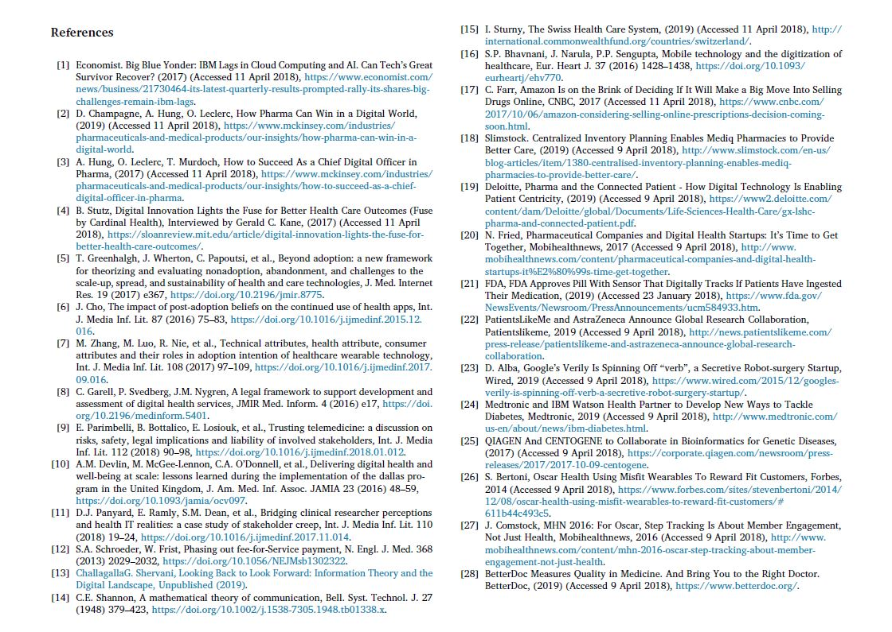

Título:
Título en Inglés: Digitization of healthcare organizations: The digital health landscape and information theory.
Título en Español: Digitalización de las organizaciones sanitarias: el panorama de la salud digital y la teoría de la información.
Autores:
Michelle Helena van Velthoven
Carlos Cordon
Goutam Challagalla
Resumen:
En inglés:
Background:
This paper builds on an integrated framework of digital opportunities, based on information theory that was initially proposed by Claude Shannon: 1) providers of infrastructure for transmitting information; 2) platforms, devices, and software to bundle, store and deliver others’ content; 3) original content creator); 4) platforms enabling peer-to-peer exchange; and 5) connected intelligence embed in devices. We aimed to clarify the meaning of digitization of organisations in the healthcare landscape and answer ‘how can healthcare or-ganisations compete in a world that is rapidly digitizing?’.
Methods:
To gain more insight into the views of different stakeholders, we invited 12 participants with a wide range of backgrounds to a workshop. Stakeholders included people representing the views from patients, carers, local hospitals, pharmacy retailers, health insurers, health services researchers, engineers, and technology and pharmaceutical companies. We organised the workshop at the IMD business school in Lausanne and used Switzerland as a case study. We asked participants to take part in group work to identify organisations with digital health products and their key success factors. We evaluated organisations’ aims and competencies, and through which pathway they competed.
Main Findings:
There was overlap in some key success factors, such as security, interoperability, low cost, and enough people using it, between different types of digital opportunities of the framework. No organisations that were identified during the workshop were currently operating in different opportunities. We found a range of different ways through which digital health organisations partnered with other organisations. The relatively smaller organisations identified in our workshop operated through one pathway.
Main Conclusions:
This work has implications for organisations in understanding the digital health landscape and their competitors’ digital initiatives. Firstly, organisations can identify where they operate and map strengths and limitations of their digital initiatives. Secondly, they can learn from different competition path-ways: 1) develop new capabilities faster; 2) collaborate with technology organisations; 3) create collaborations with traditional competitors; and 4) create a new business model. This knowledge needs to be the basis for the development of digital solutions, which will be crucial for the survival of many organisations in the healthcare landscape.
En español:
Trasfondo:
Este artículo se basa en un marco de oportunidades digitales, basado en la teoría de la información, propuesta por Claude Shannon: 1) Proveedores de infraestructura para transmitir información; 2) Plataformas, dispositivos y software para agrupar, almacenar y entregar contenido de otros; 3) Creador de contenido digital; 4) Plataformas que permiten el intercambio de pares; y 5) Inteligencia conectada entre dispositivos. El objetivo de la investigación es aclarar el significado de la digitalización de las organizaciones en el panorama de la atención médica y responder: ¿Cómo pueden competir las organizaciones de atención médica en un mundo que se está digitalizando rápidamente?.
Métodos:
Con el propósito de obtener información sobre las opiniones de las diferentes partes, se invitaron a 12 participantes con una amplia gama de antecedentes a un taller. Las personas involucradas representaban a las partes interesadas: cuidadores, hospitales locales, farmacias, aseguradoras de salud, investigadores, ingenieros y tecnología y empresas farmacéuticas. El taller se organizó en la escuela de negocios IMD en Lausana y usaron a Suiza como caso de estudio. Nosotros preguntamos a los participantes para que tomaran parte de un grupo de trabajo e identificaran las organizaciones con los productos digitales de salud y sus factores clave de éxito. Evaluamos los objetivos y competencias de las organizaciones, ya través de qué vía competían.
Hallazgos Principales:
Se encontraron varios factores claves de éxito, tales como: La seguridad, la interoperabilidad, el bajo costo y suficientes personas usándolo, entre los diferentes tipos de oportunidades digitales del marco. Ninguna de las organizaciones que se identificaron durante el taller se encontraba actualmente operando en diferentes oportunidades. Encontramos una variedad de formas diferentes a través de las cuales las organizaciones de salud digital se asociaron con otras organizaciones. Las organizaciones relativamente más pequeñas identificadas en nuestro taller operaron a través de un camino.
Principales Conclusiones:
Este trabajo tiene implicaciones para que las organizaciones comprendan el panorama de la salud digital y las iniciativas digitales de sus competidores. En primer lugar, las organizaciones pueden identificar dónde operan y mapear las fortalezas y limitaciones de sus iniciativas digitales. En segundo lugar, pueden aprender de diferentes vías de competencia: 1) desarrollar nuevas capacidades más rápido; 2) colaborar con organizaciones tecnológicas; 3) crear colaboraciones con competidores tradicionales; y 4) crear un nuevo modelo de negocio. Este conocimiento debe ser la base para el desarrollo de soluciones digitales, que serán cruciales para la supervivencia de muchas organizaciones en el panorama de la atención médica.
Palabras Clave:
En inglés:
- Digital health
- Organisations
- Innovation
- Change Management
- Digitization
En español:
- Salud
- Organizaciones
- Innovación
- Gestión del Cambio
- Digitalización
Referencias:
La cantidad de referencias de este artículo es 28.
